|
.
v1.1.3
|
|
.
v1.1.3
|
| Dependencies | None |
|---|---|
| CMakeLists.txt | set( PLUGINS "photosynthesis" ) |
| Header File | #include "PhotosynthesisModel.h" |
| Class | PhotosynthesisModel |
| Constructors |
|---|
| PhotosynthesisModel( helios::Context* ) |
| Primitive Data Label | Symbol | Units | Data Type | Description | Available Plug-ins | Default Value |
|---|---|---|---|---|---|---|
| radiation_flux_PAR |  | W/m2 | float | Radiative flux in PAR band. | Can be computed by RadiationModel plug-in. | 0 |
| temperature |  | Kelvin | float | Primitive surface temperature. | Can be computed by EnergyBalanceModel plug-in. | 300 K |
| air_CO2 |  |  mol CO2/mol air mol CO2/mol air | float | CO2 concentration of air outside of primitive boundary-layer. | N/A | 390 mol/mol |
| moisture_conductance |  | mol air/m2-s | float | Overall conductance to moisture between substomatal cells and outside of boundary-layer. | Can be computed by StomatalConductanceModel plug-in. | 0.25 mol/m2-s |
| Primitive Data Label | Symbol | Units | Data Type | Description |
|---|---|---|---|---|
| net_photosynthesis | 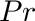 | mol CO2/m2-sec | float | Net rate of carbon transfer per unit one-sided area. |
| Primitive Data Label | Symbol | Units | Data Type | Description |
|---|---|---|---|---|
| Ci |  | mol CO2/mol | float | Intercellular CO2 concentration. |
| limitation_state | N/A | N/A | int | Photosynthesis limitation state. limitation_state=0 if photosynthesis is Rubisco-limited, limitation_state=1 if photosynthesis is electron transport limited. |
The photosynthesis plug-in implements two types of models: an empirical model similar to that of Johnson (2010); and the biochemical model of Farquhar, von Caemmerer, and Berry (1980), which are described separately below.
By default, the plug-in uses the empirical model. There are functions that can be used to switch between the two types of available models, as illustrated below.
#include "PhotosynthesisModel.h" int main( void ){
PhotosynthesisModel photosynthesismodel(&context); photosynthesismodel.run(); The net photosynthetic rate is described by the equation:

 is the photosynthesis assimilation rate at saturating irradiance and reference temperature ( 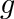) and intercellular CO2 concentration (
is the photosynthesis assimilation rate at saturating irradiance and reference temperature ( 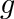) and intercellular CO2 concentration (  ).
).
The response of photosynthesis to light is given by a simple exponential function, which is defined by only one parameter:
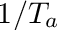,
where  is the light response curvature.
is the light response curvature.
It is assumed that the maximum CO2 assimilation rate  decreases exponentially about some optimum temperature
decreases exponentially about some optimum temperature  . The temperature response function is given by:
. The temperature response function is given by:
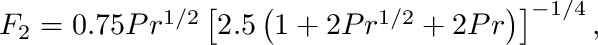,
where 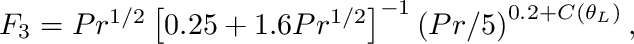 is the minimum temperature at which assimilation occurs, is the temperature at which the maximum assimilation rate occurs, is the reference temperature chosen to define 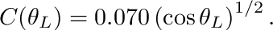, and  is a shape parameter.
is a shape parameter.
The "dark" respiration rate 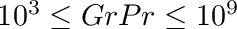 is assumed to increase exponentially with temperature following the Arrhenius equation (and assumed not to vary with ambient CO2 concentration). Thus, the dark respiration rate is calculated simply as
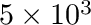,
where 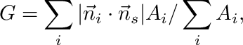 and 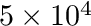 are parameters, and temperature is in Kelvin.
We assume that the maximum assimilation rate varies linearly with intercellular CO2 concentration over the range of expected concentrations, and is zero at zero CO2. Thus, the response function is simply
 ,
,
where is intercellular CO2 concentration ( mol CO2/mol air).
The intercellular CO2 concentration is estimated as a function of the boundary-layer conductance, stomatal conductance, and ambient CO2 concentration outside of the primitive boundary-layer. The rate of transport of CO2 to the leaf (i.e., assimilation rate) is given by
 ,
,
where is the conductance to moisture from the substomtal cells to outside of the boundary-layer. The 0.75 factor comes from the fact that diffusion of CO2 in air is slower than that of water vapor (see Eq. 7.33 of Campbell and Norman).
Since is dependent on and vice-versa, an iterative solution is requred for .
| Variable | Units | Description |
|---|---|---|
| W/m2 | Photosynthetic radiation energy flux. |
| Kelvin | Surface temperature. |
| 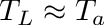 | mol CO2/mol air | Ambient CO2 concentration outside of boundary-layer. |
 | mol air/m2-s | Boundary-layer conductance. |
| 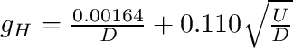 | mol air/m2-s | Stomatal conductance. |
| Parameter | Units | Description |
|---|---|---|
| mol CO2/m2-sec | Assimilation rate at saturating irradiance and reference temperature and intercellular CO2 concentration. | |
| W/m2 | Shape parameter for response to light. |
| Kelvin | Minimum temperature at which assimilation occurs. | |
| Kelvin | Temperature at which maximum assimilation rate occurs. |
| unitless | Temperature response shape function. |
 mol K1/2/m2-s mol K1/2/m2-s | Pre-exponential factor for respiration temperature response. | |
| 1/Kelvin | Respiration temperature response rate. | |
| 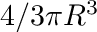 | unitless | CO2 response rate. |
The response of the assimilation rate to light is obtained from gas exchange measurements at reference temperature ( ) and CO2 ( ) in which the irradiance is varied across some range. However, one important detail is that the dark respiration rate should be removed such that 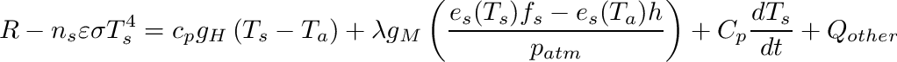 in the dark (see plot below). This can be done by measuring the net CO2 flux starting in the dark, then subtracting the dark flux from the total flux for each subsequent light level.

The response of the assimilation rate to temperature is obtained using gas exchange measurements at saturating light levels and the reference CO2 concentration. The temperature is varied across some range, and the assimilation rate is measured. It is assumed that the optimum temperature is the temperature corresponding to the maximum measured assimilation rate. The model is fit to the data to determine and .

The response of the dark respiration to temperature is obtained using gas exchange measurements in the dark. The leaf is first acclimated to the dark chamber, then leaf temperature is varied across some range. The model is then fit to the data to determine parameters.

The response of the assimilation rate is obtained using gas exchange measurements at saturating light levels and the reference temperature , but with varying external CO2 concentration (which produces varying intercellular CO2).

The model of Farquhar, von Caemmerer, and Berry (1980) is a biochemical model of photosynthesis. The form used here predicts photosynthetic production as a function of photoshynthetically active radiation flux, ambient CO2 concentration, and stomatal conductance, which may itself provide responses to a number of additional environmental variables.
The implementation used here calculates the net rate of CO2 exchange as
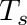
where
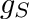
is the rate limited by Rubisco, and

is the rate limited by RuBP regeneration, and the potential electron transport rate  is assumed to follow a rectangular hyperbolic relationship
is assumed to follow a rectangular hyperbolic relationship
 .
.
Note that a limitation state based on TPU utilization is not included in the model for simplicity.
The intercellular CO2 concentration is determined from the relation
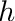
which is solved numerically using the Secant method, since is a complex nonlinear function of which prevents an analytical solution for . The 0.75 factor comes from the fact that diffusion of CO2 in air is slower than that of water vapor (see Eq. 7.33 of Campbell and Norman).
The "dark" respiration rate is assumed to increase exponentially with temperature following the Arrhenius equation (and assumed not to vary with ambient CO2 concentration). Thus, the dark respiration rate is calculated simply as
,
where and are parameters, and temperature is in Kelvin.
| Variable | Units | Description |
|---|---|---|
| W/m2 | Photosynthetic radiation energy flux. |
| Kelvin | Surface temperature. |
| mol CO2/mol air | Ambient CO2 concentration outside of boundary-layer. | |
| mol air/m2-s | Conductance to moisture transfer between inside of the leaf and outside of boundary-layer. |
| Parameter | Units | Description |
|---|---|---|
 | mol CO2/m2-sec | Maximum Rubisco carboxylation rate. |
| 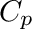 | Pa | Chloroplastic CO2 photocompensation point. |
| 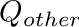 | Kelvin | Lumped parameter; 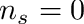. |
| 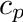 | mol/m2 | Maximum electron transport rate. |
| | unitless | Temperature response shape function. |
| mol K1/2/m2-s | Pre-exponential factor for respiration temperature response. | |
| 1/Kelvin | Respiration temperature response rate. | |
| unitless | CO2 response rate. |
 1.8.18
1.8.18